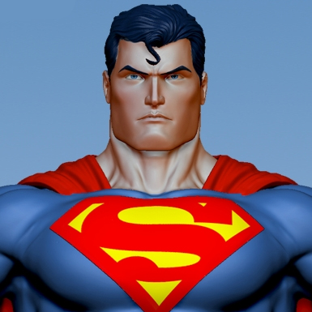

Superman
A hero from a far away planet, who gains: Super Strength, Invulnerability, and various other powers due to the radiation of our yellow sun.

Batman
A hero with a tragic past. Batman spent his entire life training with ninjas and learning to be a master detective, after the death of his parents.

Nightwing
The protege of Batman. Joined Batman at a very young age when his parents were killed by a freak accident.